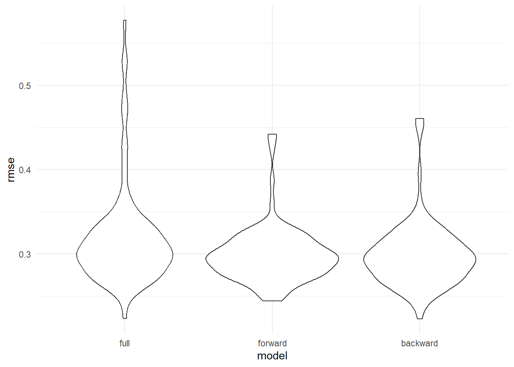
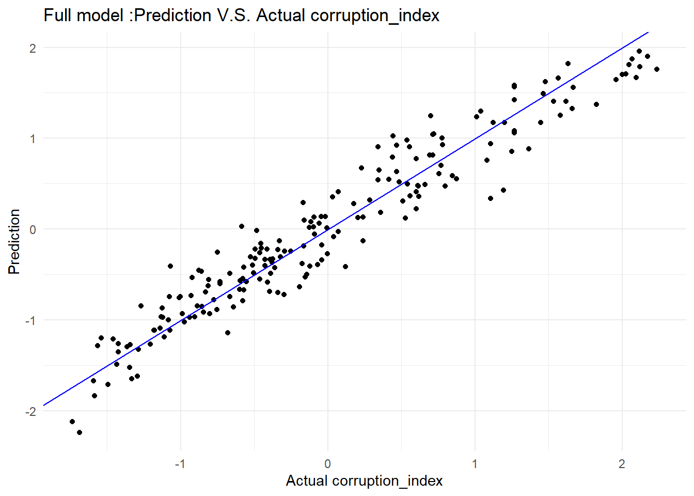

Regression
2023-12-09
Introduction
In this part, linear regression models are generated to help us to have a better understanding of the relationship between corruption index and other variables. After data cleaning, all variables and the number of missing data are shown below.
overall_dataset = read.csv("data/cleaned_data/overall_dataset.csv")NA_table_1 =
overall_dataset|>
is.na()|>
colSums()
NA_table_1|>
knitr::kable(col.names = c("Counts of NA"))| Counts of NA | |
|---|---|
| country_name | 0 |
| country_code | 0 |
| con_cor | 3 |
| gov_eff | 3 |
| pol_vio | 1 |
| regu_qual | 3 |
| rul_law | 3 |
| voi_acc | 6 |
| GDP | 14 |
| population | 9 |
| latitude | 3 |
| longitude | 3 |
| development | 0 |
| continent | 0 |
overall_dataset =
overall_dataset|>
drop_na()|>
dplyr::select(-country_name, -latitude, -longitude,-country_code)Full model
full.model = lm(con_cor ~ ., data = overall_dataset)
empty.model = lm(con_cor ~ 1,data = overall_dataset)The full model includes all variables except latitude and longitude since continent is included as location information. This model is treated as the baseline to compare with model after selection.
Tables below show summary information of the full model. The p-value for government_effectiveness, rule_of_law, voice_and_accountability, continentEurope have p-value lower than any reasonable significance level(1%, 5%, 10%), which means these variable are more significant than other in this model. The R2adj for this model is 0.8983053, which presents a very high proportion of variance in response variable explained the linear relationship between with predictors and response variable.
All.Criteria = function(the.model){
tibble(
the.BIC = BIC(the.model),
the.LL = logLik(the.model),
the.AIC = AIC(the.model),
the.PRESS = PRESS(the.model),
the.R2adj = summary(the.model)$adj.r.squared,
)
}
full.model|>
broom::tidy()|>
dplyr::select(term, estimate, p.value)|>
knitr::kable(caption ="Estimate and P-value for full model")| term | estimate | p.value |
|---|---|---|
| (Intercept) | 0.1405094 | 0.0993719 |
| gov_eff | 0.4658574 | 0.0000001 |
| pol_vio | 0.0200257 | 0.6618070 |
| regu_qual | -0.0512946 | 0.4923111 |
| rul_law | 0.4528029 | 0.0000004 |
| voi_acc | 0.1649606 | 0.0008278 |
| GDP | 0.0000044 | 0.7551193 |
| population | -0.0027533 | 0.1800214 |
| developmentDeveloping | -0.0875213 | 0.2492473 |
| developmentLeast Developed | 0.0358069 | 0.7219710 |
| continentAsia | -0.1084208 | 0.1614065 |
| continentEurope | -0.2158619 | 0.0205606 |
| continentNorth America | -0.1440205 | 0.1287667 |
| continentOceania | -0.0219779 | 0.8378814 |
| continentSouth America | -0.0800786 | 0.4969813 |
All.Criteria(full.model)|>
knitr::kable(caption = "Criterias for full model")| the.BIC | the.LL | the.AIC | the.PRESS | the.R2adj |
|---|---|---|---|---|
| 170.5324 | -42.96004 | 117.9201 | 22.12111 | 0.8987517 |
check normality and remove outlier
Plots below shows that the residuals are overall normally distributed. The qq-plot shows that the regression is linear and there is no need to add transformation variables. But potential outliers are presented. Then, outliers are detected and removed by using cutoffs based on t-distribution. With data after removing outliers, the full model is updated, and BIC and AIC are all decreased, which indicate a better balance between explaining the data and avoiding overfitting.
SR = stdres(full.model)
n = length(full.model$residuals)
p = length(full.model$coefficients)
alpha = 0.01
t.cutoff = qt(1- alpha/2, n-p)
par(mfrow=c(2,2))
plot(full.model)
outliers = which(abs(SR)>t.cutoff)
outliers|>
knitr::kable(caption = "outliers")| x | |
|---|---|
| 18 | 18 |
| 22 | 22 |
| 158 | 158 |
| 181 | 181 |
new.data = overall_dataset[-outliers,]
full.model = lm(con_cor ~ ., data = new.data)
All.Criteria(full.model)|>
knitr::kable(caption ="Estimate and P-value for updated full model")| the.BIC | the.LL | the.AIC | the.PRESS | the.R2adj |
|---|---|---|---|---|
| 124.7907 | -20.25249 | 72.50499 | 17.67333 | 0.9186777 |
Selected model
After the updated full model is built, backward and forward selection function is applied to gain selected models.
backward model selection
The summary of backward selected model is shown below. pol_vio, regu_qual, GDP are deleted. This is expected because these variables have relatively high p-value that presented in full model above.
backward.model.AIC = stepAIC(full.model, scope = list(lower = empty.model, upper= full.model), k = 2,direction = "backward",trace = FALSE)
forward.model.AIC = stepAIC(empty.model, scope = list(lower = empty.model, upper= full.model), k = 2,direction = "forward",trace = FALSE)backward.model.AIC|>
broom::tidy()|>
dplyr::select(term, estimate, p.value)|>
knitr::kable(caption ="Estimate and P-value for backward selected model")| term | estimate | p.value |
|---|---|---|
| (Intercept) | 0.1360034 | 0.0668905 |
| gov_eff | 0.4338981 | 0.0000000 |
| rul_law | 0.4574146 | 0.0000000 |
| voi_acc | 0.1639242 | 0.0001597 |
| population | -0.0020295 | 0.1548008 |
| developmentDeveloping | -0.0830818 | 0.2107660 |
| developmentLeast Developed | 0.0155433 | 0.8595612 |
| continentAsia | -0.1376894 | 0.0482038 |
| continentEurope | -0.2462142 | 0.0034882 |
| continentNorth America | -0.1360832 | 0.0925339 |
| continentOceania | 0.0645921 | 0.4889771 |
| continentSouth America | -0.0793981 | 0.4483360 |
All.Criteria(backward.model.AIC)|>
knitr::kable(caption = "Criterias for backward selected selected model")| the.BIC | the.LL | the.AIC | the.PRESS | the.R2adj |
|---|---|---|---|---|
| 109.1065 | -20.31216 | 66.62433 | 16.12417 | 0.919969 |
forward model selection
The summary of forward selected model is shown below. pol_vio, GDP, continent are deleted. Comparing to backward selected model, continent is also deleted instead of regu_qual.The possible reason is that forward selection may be more sensitive to the order in which variable are added; on the other hand, backward selection tends to be more stable and less dependent on the order of variable removal.
forward.model.AIC|>
broom::tidy()|>
dplyr::select(term, estimate, p.value)|>
knitr::kable(caption ="Estimate and P-value for forward selected model")| term | estimate | p.value |
|---|---|---|
| (Intercept) | -0.0092939 | 0.8550218 |
| rul_law | 0.4944472 | 0.0000000 |
| gov_eff | 0.4731432 | 0.0000000 |
| voi_acc | 0.1582462 | 0.0000360 |
| developmentDeveloping | -0.0281897 | 0.6759664 |
| developmentLeast Developed | 0.1464242 | 0.0937479 |
| population | -0.0027154 | 0.0879449 |
| regu_qual | -0.0954539 | 0.1661501 |
All.Criteria(forward.model.AIC)|>
knitr::kable(caption = "Criterias for forward selected selected model")| the.BIC | the.LL | the.AIC | the.PRESS | the.R2adj |
|---|---|---|---|---|
| 140.8401 | -46.62285 | 111.2457 | 20.37547 | 0.8988063 |
Comparision of full model, forward and backward selected model
Backward selected model has the lowest BIC and highest R2adj. Interestingly, forward selected model has the lower than BIC and R2adj than unselected full model, which indicated that continentEurope has unexcepted significance in the whole model.
forward_model = All.Criteria(forward.model.AIC)|>
mutate(the.LL = as.double(the.LL))
backward_model = All.Criteria(backward.model.AIC)|>
mutate(the.LL = as.double(the.LL))
full_model = All.Criteria(full.model)|>
mutate(the.LL = as.double(the.LL))
comparsion =
bind_rows( full_model,forward_model, backward_model)|>
mutate(model = c('full', 'forward', 'backward'))|>
dplyr::select(model, everything())|>
knitr::kable(caption = "Comparision of full model, forward and backward selected model")
comparsion| model | the.BIC | the.LL | the.AIC | the.PRESS | the.R2adj |
|---|---|---|---|---|---|
| full | 124.7907 | -20.25249 | 72.50499 | 17.67333 | 0.9186777 |
| forward | 140.8401 | -46.62285 | 111.24569 | 20.37547 | 0.8988063 |
| backward | 109.1065 | -20.31216 | 66.62433 | 16.12417 | 0.9199690 |
Then, the dataset is divided into train and test datasets 100 times. The graph below shows the RMSE distribution in test datasets for three models. From the plot, forward and backward selected model have RMSE around 0.2 to 0.4. However, the RMSE of full model is over-spread. The interference of GDP and pol_vio could lead to the result.
cv_df =
crossv_mc(new.data, 100) |>
mutate(
train = map(train, as_tibble),
test = map(test, as_tibble))cv_df =
cv_df |>
mutate(
model_full = map(train, \(df) lm(con_cor ~ ., data = df)),
model_forward = map(train, \(df) lm(con_cor ~ rul_law + gov_eff + voi_acc + development + population + regu_qual, data = df)),
model_backward = map(train, \(df) lm(con_cor ~ rul_law + gov_eff + voi_acc + development + population + continent, data = df)))|>
mutate(
rmse_full = map2_dbl(model_full, test, \(mod, df) rmse(model = mod, data = df)),
rmse_forward = map2_dbl(model_forward, test, \(mod, df) rmse(model = mod, data = df)),
rmse_backward = map2_dbl(model_backward, test, \(mod, df) rmse(model = mod, data = df)))cv_df |>
dplyr::select(starts_with("rmse")) |>
pivot_longer(
everything(),
names_to = "model",
values_to = "rmse",
names_prefix = "rmse_") |>
mutate(model = fct_inorder(model)) |>
ggplot(aes(x = model, y = rmse)) + geom_violin()
The graphs below show the Prediction VS Actual for three models. Overall, there is no significant difference between three models.
new.data|>
modelr::add_predictions(full.model)|>
ggplot(aes(x = con_cor, y = pred)) +
geom_point() +
geom_abline(intercept = 0, slope = 1, color = "blue") +
labs(
title = "Full model :Prediction V.S. Actual corruption_index",
x = "Actual corruption_index",
y = "Prediction"
)
new.data|>
modelr::add_predictions(forward.model.AIC)|>
ggplot(aes(x = con_cor, y = pred)) +
geom_point() +
geom_abline(intercept = 0, slope = 1, color = "blue") +
labs(
title = "Forward selected model: Prediction V.S. Actual corruption_index",
x = "Actual corruption_index",
y = "Prediction"
)new.data|>
modelr::add_predictions(backward.model.AIC)|>
ggplot(aes(x = con_cor, y = pred)) +
geom_point() +
geom_abline(intercept = 0, slope = 1, color = "blue") +
labs(
title = "Backward selected model: Prediction V.S. Actual corruption_index",
x = "Actual corruption_index",
y = "Prediction"
)
To sum up, based on all analysis above, there is no significant difference between three models. But backward selected model is the most optimal model to predict corruption index.